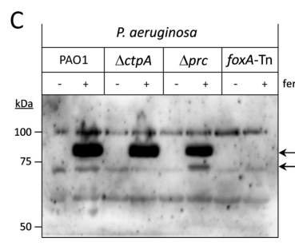

FecR-family inner-membrane signal transducer (anti-sigma/pro-sigma factor) of a TonB-dependent cell-surface signaling (CSS) system. By conserved domain architecture (InterPro FecR/FecR_N + ferric-dicitrate sensor TM module; Pfam PF04773 FecR, PF16220 DUF4880) the protein is predicted to couple an outer-membrane TonB-dependent receptor signal to an extracytoplasmic-function (ECF) sigma factor, controlling transcription of metal-uptake/transport genes. A more specific role as the anti-sigma regulator of the putative mluA/mluR/mluI lanthanide-acquisition operon (sequestering an ECF sigma factor MluI) has been proposed, but no primary literature directly characterizes this locus (C5B1I2 / MexAM1_META1p4130) experimentally; the lanthanide/MluI specifics remain inferential.
| GO Term | Evidence | Action | Reason |
|---|---|---|---|
|
GO:0016989
sigma factor antagonist activity
|
IEA
GO_REF:0000118 |
ACCEPT |
Summary: Consistent with the FecR-family identity. FecR-family proteins are membrane-anchored anti-sigma/pro-sigma transducers that sequester or otherwise control an ECF sigma factor; the conserved domain architecture (FecR/FecR_N) supports sigma factor antagonist activity as the molecular function. The specific cognate sigma factor (proposed to be a lanthanide-responsive MluI) is not experimentally established for this locus.
Supporting Evidence:
file:METEA/mluR/mluR-deep-research-falcon.md
FecR-family proteins are often described as **anti-σ** (sequestering an ECF σ factor)
file:METEA/mluR/mluR-deep-research-falcon.md
most plausibly a **FecR-family inner-membrane signal transducer (anti-σ/pro-σ regulator)**
|
|
GO:0045892
negative regulation of DNA-templated transcription
|
IEA
GO_REF:0000108 |
KEEP AS NON CORE |
Summary: Plausible as the downstream consequence of sigma factor antagonism - by sequestering its cognate ECF sigma factor, the protein prevents that sigma factor from directing RNA polymerase to target promoters, so transcription of the target uptake regulon is repressed under non-inducing conditions. mluR does not bind DNA itself; the regulatory output is mediated through the sigma factor. Retained as a non-core, inferred consequence of the anti-sigma molecular function.
Supporting Evidence:
file:METEA/mluR/mluR-deep-research-falcon.md
C5B1I2 likely functions by **controlling an ECF σ factor in the cytoplasm**, rather than binding DNA directly
|
The research report should be a detailed narrative explaining the function, biological processes, and localization of the gene product. Citations should be given for all claims.
You should prioritize authoritative reviews and primary scientific literature when conducting research. You can supplement
this with annotations you find in gene/protein databases, but these can be outdated or inaccurate.
We are specifically interested in the primary function of the gene - for enzymes, what reaction is catalyzed, and what is the substrate specificity? For transporters, what is the substrate? For structural proteins or adapters, what is the broader structural role? For signaling molecules, what is the role in the pathway.
We are interested in where in or outside the cell the gene product carries out its function.
We are also interested in the signaling or biochemical pathways in which the gene functions. We are less interested in broad pleiotropic effects, except where these elucidate the precise role.
Include evidence where possible. We are interested in both experimental evidence as well as inference from structure, evolution, or bioinformatic analysis. Precise studies should be prioritized over high-throughput, where available.
The UniProt entry C5B1I2 from Methylorubrum extorquens AM1 is annotated as FecR, an iron siderophore sensor. In the retrieved literature, no primary paper explicitly maps the gene symbol “mluR” or locus MexAM1_META1p4130 to an experimentally characterized protein; thus, “mluR” is ambiguous/under-cited for this organism in accessible full text. Functional annotation is therefore best supported by conserved domain architecture and the strongly established mechanism of FecR-like cell-surface signaling (CSS) anti-σ/pro-σ factors (inner-membrane, periplasm-to-cytoplasm transducers), plus recent 2023–2024 mechanistic updates in CSS systems. (braun2022transcriptionregulationof pages 13-13, braun2022transcriptionregulationof pages 2-3)
In current understanding, FecR-family proteins are membrane-anchored transducers that couple TonB-dependent outer-membrane receptors (that detect ferric-citrate or siderophore-like signals) to cytoplasmic extracytoplasmic-function (ECF) σ factors, thereby inducing transcription of uptake/transport genes; activation often involves regulated, sequential proteolysis (Prc/CtpA-family periplasmic proteases and the intramembrane protease RseP). (braun2022transcriptionregulationof pages 2-3, braun2022transcriptionregulationof pages 9-10, braun2022transcriptionregulationof pages 5-6)
Target protein (given): UniProt C5B1I2, described as FecR, iron siderophore sensor protein, in Methylorubrum extorquens strain AM1 (ATCC 14718 / DSM 1338 / JCM 2805 / NCIMB 9133). The listed domains (InterPro/Pfam) include FecR, FecR_N, and a Ferric-dicitrate sensor transmembrane module, consistent with a FecR-like CSS transducer. (braun2022transcriptionregulationof pages 2-3)
Across the retrieved full-text sources (reviews and primary research), no direct mention was found linking the gene symbol mluR to C5B1I2 / MexAM1_META1p4130, nor describing this specific locus experimentally. Accordingly:
CSS is an envelope-spanning regulatory mechanism in which outer-membrane TonB-dependent receptors detect extracellular metal complexes (e.g., ferric citrate or siderophores) and transmit signals into the cytoplasm to activate transcription of uptake genes. The canonical example is the E. coli Fec system, composed of:
Ligand binding to the receptor’s extracellular side triggers conformational changes reaching the periplasmic signaling domain, which interacts with the periplasmic portion of FecR; FecR then controls FecI activity. (braun2022transcriptionregulationof pages 2-3)
FecR-family proteins are often described as anti-σ (sequestering an ECF σ factor) and/or pro-σ (generating an activating σ-binding fragment) regulators. Mechanistically, a defining feature is that the output (σ activation) is mediated by an N-terminal cytosolic region of FecR-like proteins that physically interacts with and stimulates the partner ECF σ factor (e.g., binding σ4). (braun2022transcriptionregulationof pages 5-6, braun2022transcriptionregulationof pages 6-7)
For C5B1I2 (FecR-like), the primary function is not catalysis or transport. Rather, the protein’s function is signal transduction and transcriptional regulation: coupling extracellular iron-carrier availability to transcriptional activation of transport/uptake systems via an ECF σ factor. (braun2022transcriptionregulationof pages 2-3, braun2022transcriptionregulationof pages 5-6)
Because AM1-specific experiments for C5B1I2 were not retrieved, the following annotation is best supported as high-confidence inference from conserved FecR-family features.
The FecR archetype is an inner-membrane protein with:
This topology strongly supports that C5B1I2 functions at the cytoplasmic membrane and in the periplasmic space (signal reception), while regulating transcription in the cytoplasm through σ factor control. (braun2022transcriptionregulationof pages 5-6, braun2022transcriptionregulationof pages 6-7)
Canonical CSS logic (applicable template for C5B1I2):
In E. coli, this specifically controls fecA and related genes; iron-responsive repression is commonly integrated via Fur. (braun2022transcriptionregulationof pages 2-3, braun2022transcriptionregulationof pages 10-10)
A major characteristic of FecR-like proteins is regulated intramembrane proteolysis (RIP). In the canonical model:
Multiple fragment sizes are reported for FecR-like processing, including ~20, 15, and 12 kDa species. (braun2022transcriptionregulationof pages 9-10, braun2022transcriptionregulationof pages 5-6)
Genetic mapping in FecR indicates the activating region is near residues ~1–59, and specific conserved residues (e.g., L13, W19, W39, W50 in the model) are critical for induction. This supports annotation of C5B1I2 N-terminus as the σ-factor binding/activating module, with the periplasmic domain acting as the sensor-input module. (braun2022transcriptionregulationof pages 6-7)
A 2024 study in Pseudomonas aeruginosa (Fox system) provides a major conceptual update: the TonB-dependent receptor signaling domain can already bind the anti-σ factor in the absence of ligand, and this interaction can protect the anti-σ factor from proteolysis, suppressing σECF activation. Ligand-dependent changes then permit proteolytic activation. This revises the older “signal promotes binding” view into a model where signal relieves a protected state, enabling degradation/activation. (wettstadt2024bacterialtonbdependenttransducers pages 2-3, wettstadt2024bacterialtonbdependenttransducers pages 1-2)
The same study provides residue-level evidence for a structured receptor–anti-σ interface (β-sheet interface; key residues) and shows receptor processing (FoxA ~84–85 kDa vs a processed ~73–74 kDa form), reinforcing that CSS can involve coordinated processing of multiple envelope proteins. (wettstadt2024bacterialtonbdependenttransducers pages 10-12, wettstadt2024bacterialtonbdependenttransducers media 7647bb29, wettstadt2024bacterialtonbdependenttransducers media b827a8a5)
A 2023 mBio study summarizes key mechanistic features of RseP (S2P-family intramembrane protease) and notes its role in cleaving FecR-type substrates, with structural elements (PDZ domains as a filter; membrane-reentrant β-sheet near the active site) helping explain substrate selection and intramembrane cleavage. These advances strengthen the mechanistic plausibility that a FecR-like AM1 protein would be regulated by conserved RIP machinery. (yokoyama2023s2pintramembraneprotease pages 1-2)
Even though these values are derived from model systems (primarily E. coli Fec), they provide quantitative constraints consistent with a FecR-family annotation:
For 2024 CSS updates:
Direct AM1 literature evidence for C5B1I2 is missing in retrieved sources, but Methylorubrum extorquens AM1 clearly deploys TonB-dependent systems for metal acquisition (well documented for lanthanides), and related methylobacteria use siderophore-like metallophores for iron/lanthanide availability.
Work in M. extorquens AM1 describes a lanthanide uptake system involving TonB-dependent receptors (e.g., LutH) and downstream transport components, in a manner explicitly compared to siderophore-mediated Fe uptake. This confirms AM1’s envelope is equipped for TonB-dependent, metallophore-like acquisition, which is the same architectural context required for a FecR-like iron-sensor transducer. (zytnick2022discoveryandcharacterization pages 1-3, roszczenkojasinska2019lanthanidetransportstorage pages 5-8)
Lanthanide acquisition by methylotrophs is motivating for biotechnological recovery of lanthanides from waste streams; AM1 lanthanide uptake and storage are discussed as a step toward designing sustainable recovery platforms. (zytnick2022discoveryandcharacterization pages 1-3)
A lanthanophore (methylolanthanin) is described as enabling normal lanthanide accumulation, with overexpression increasing bioaccumulation, and environmental lanthanide concentrations in phyllosphere are reported (0.7–7 μg/g dry weight), contextualizing bioavailability challenges that metallophore systems address. (zytnick2022discoveryandcharacterization pages 1-3)
In Methylobacterium aquaticum strain 22A, a staphyloferrin B-like siderophore cluster is required for growth under low iron; the siderophore also solubilizes insoluble lanthanide oxide and is linked to methanol growth, and multiple TonB-dependent receptors are implicated in iron-citrate and lanthanide uptake. This supports the ecological plausibility of an iron-sensing CSS regulator in methylobacteria and provides an implementation model for how metallophore pathways can integrate Fe and Ln physiology. (juma2022siderophoreforlanthanide pages 1-2, juma2022siderophoreforlanthanide pages 9-10)
The most authoritative synthesis used here is the 2022 FEMS Microbiology Reviews article, which presents FecR-type proteins as a mechanistically defined class: envelope-spanning, membrane-anchored regulators that activate ECF σ factors via proteolytic cascades initiated by TonB-dependent receptor signaling. This review is widely consistent with (and conceptually extended by) 2024 findings showing receptor–anti-σ interactions can be protective in the absence of signal. (braun2022transcriptionregulationof pages 5-6, wettstadt2024bacterialtonbdependenttransducers pages 2-3)
| Annotation aspect | Evidence / finding | Interpretation for UniProt C5B1I2 (MexAM1_META1p4130, putative mluR) | Evidence source (citation id) |
|---|---|---|---|
| Identity verification status | No direct literature mapping found in retrieved sources for the symbol mluR, locus MexAM1_META1p4130/META1p4130, or direct experimental characterization of UniProt C5B1I2 in Methylorubrum extorquens AM1. | The symbol is ambiguous/under-cited; functional annotation should therefore be based on the UniProt assignment and conserved FecR-family architecture/mechanism, while avoiding conflation with unrelated genes of similar name. | (braun2022transcriptionregulationof pages 13-13, braun2022transcriptionregulationof pages 2-3) |
| UniProt-provided identity | UniProt identifies C5B1I2 as FecR, iron siderophore sensor protein from Methylorubrum extorquens AM1, locus MexAM1_META1p4130, with domains IPR006860 FecR, IPR032623 FecR_N, IPR012373 Ferrdict_sens_TM, PF16220 DUF4880, PF04773 FecR. | The domain set is consistent with a FecR-like anti-σ/pro-σ transducer that links an outer-membrane TonB-dependent receptor signal to cytoplasmic transcriptional control of iron uptake genes. | (braun2022transcriptionregulationof pages 2-3) |
| Canonical protein class | FecR-like proteins are membrane-embedded regulatory proteins in TonB-dependent cell-surface signaling (CSS) systems, working with an outer-membrane receptor (e.g., FecA) and an ECF σ factor (e.g., FecI). | C5B1I2 is best interpreted as the inner-membrane signaling/anti-σ component of a CSS pathway, not as an enzyme or transporter. | (braun2022transcriptionregulationof pages 2-3) |
| Inferred cellular localization / topology | Archetypal FecR has an N-proximal cytoplasmic region, a single transmembrane helix near residues ~85–100 (prediction centered around ~82–100), and a C-proximal periplasmic domain that contacts the receptor signaling domain. | For C5B1I2, the most likely topology is cytoplasmic N-terminus → single inner-membrane TM → periplasmic C-terminus. | (braun2022transcriptionregulationof pages 5-6, braun2022transcriptionregulationof pages 6-7) |
| Periplasmic interaction partner | In the Fec archetype, the outer-membrane receptor signaling domain (FecA residues 1–79) binds the periplasmic domain of FecR (residues 101–317); related PupB:PupR proteins form a stable 1:1 periplasmic signaling complex. | C5B1I2 is predicted to receive signal from a TonB-dependent outer-membrane transducer/receptor via its periplasmic C-terminal region. | (braun2022transcriptionregulationof pages 5-6, braun2022transcriptionregulationof pages 4-5) |
| Cytoplasmic output function | The FecR N-terminus directly stimulates the partner ECF σ factor; induction-competent region maps to about residues 1–59 (or 9–59) in the model system, and short N-terminal fragments can be sufficient for activation. | C5B1I2 likely functions by controlling an ECF σ factor in the cytoplasm, rather than binding DNA directly. | (braun2022transcriptionregulationof pages 6-7, braun2022transcriptionregulationof pages 13-13) |
| Pathway role | Canonical pathway: TonB-dependent receptor ligand binding → conformational signaling across the envelope → FecR-like anti-σ processing → ECF σ activation → transcription of iron uptake genes. Fur commonly represses these systems under iron sufficiency. | C5B1I2 is most plausibly part of an iron-responsive transcriptional signaling pathway for uptake functions, likely downstream of a TonB-dependent receptor and upstream of iron acquisition gene expression. | (braun2022transcriptionregulationof pages 2-3, braun2022transcriptionregulationof pages 10-10) |
| Proteolytic activation mechanism | FecR-like proteins undergo regulated intramembrane proteolysis: periplasmic cleavage(s) generate intermediates, then RseP cleaves within/near the membrane to release an N-terminal activating fragment. Prc acts upstream in the periplasm; newer CSS work also implicates CtpA in some systems. | C5B1I2 is expected to be a proteolytically activated transducer, not a static scaffold. | (braun2022transcriptionregulationof pages 9-10, braun2022transcriptionregulationof pages 8-9, yokoyama2023s2pintramembraneprotease pages 1-2, wettstadt2024bacterialtonbdependenttransducers pages 2-3) |
| Fragment sizes / processing statistics | Reported FecR-related fragments include approximately 20 kDa, 15 kDa, and 12 kDa products; additional species around 25 kDa and 17 kDa are described in related analyses, with FecR85 comigrating near the 15-kDa form. | These fragment sizes provide a benchmark for interpreting any future immunoblot/proteolysis experiments on C5B1I2. | (braun2022transcriptionregulationof pages 9-10, braun2022transcriptionregulationof pages 5-6, braun2022transcriptionregulationof pages 8-9, braun2022transcriptionregulationof pages 13-13) |
| Key functional residues in activating N-terminus | In E. coli FecR, mutations L13Q, W19R, W39R, W50R in the N-terminal activating region abolish induction, and these residues are conserved in FecR-like proteins. | Conserved N-terminal residues in C5B1I2 would be strong candidates for σ-factor interaction and activation. | (braun2022transcriptionregulationof pages 6-7) |
| Quantitative regulatory data | Unrepressed FecI abundance is <1 molecule/cell in the model system; in an rseP mutant, fecA-lacZ is not induced by ferric citrate, whereas wild type shows about 10-fold induction. | These values indicate that FecR/RseP-dependent signaling can strongly gate transcription and that σ-factor abundance is normally extremely low. | (braun2022transcriptionregulationof pages 5-6, braun2022transcriptionregulationof pages 9-10) |
| Recent 2024 mechanistic update | In the Fox CSS system, the receptor signaling domain can bind the anti-σ factor before induction and protect it from proteolysis; this revises the older view that receptor–anti-σ contact occurs only after ligand detection. | For C5B1I2, the resting state may involve a preformed protected receptor–anti-σ complex rather than a purely signal-triggered first contact. | (wettstadt2024bacterialtonbdependenttransducers pages 2-3, wettstadt2024bacterialtonbdependenttransducers pages 1-2) |
| Residue-level interface data from 2024 | AlphaFold-guided and mutational analysis in FoxA/FoxR identified a 5-stranded β-sheet interface; FoxR S292/G293 and FoxA S81 are critical for interaction, while β-strand-disrupting substitutions abolish binding. | Although from a different bacterium, these data support a conserved structured periplasmic receptor–anti-σ interface relevant to C5B1I2 domain-function inference. | (wettstadt2024bacterialtonbdependenttransducers pages 10-12, wettstadt2024bacterialtonbdependenttransducers media b827a8a5) |
| Receptor processing benchmark | In the Fox system, Western blots show full-length FoxA ~84–85 kDa and a processed form lacking the signaling domain at ~73–74 kDa. | These data reinforce that CSS regulation can involve processing of both the anti-σ protein and the receptor, which may be relevant when interpreting future C5B1I2-associated receptor studies. | (wettstadt2024bacterialtonbdependenttransducers pages 10-12, wettstadt2024bacterialtonbdependenttransducers media 7647bb29) |
| Methylorubrum-specific context | M. extorquens AM1 has documented TonB-dependent metal uptake systems (e.g., lanthanide uptake via LutH and a TonB-ABC pathway), but retrieved sources did not directly connect these methylotroph studies to a named FecR/FecI-like iron CSS module or to mluR/C5B1I2. | The organism clearly uses TonB-dependent metal acquisition, making a FecR-like iron signaling protein biologically plausible, but direct experimental evidence for C5B1I2 remains absent in retrieved literature. | (zytnick2022discoveryandcharacterization pages 1-3) |
Table: This table consolidates the strongest available evidence for annotating UniProt C5B1I2 as a FecR-like inner-membrane anti-sigma/sensor protein in Methylorubrum extorquens AM1. It distinguishes direct evidence from inference, highlights the ambiguity around the symbol mluR, and maps each claim to citation-ready context IDs.
| Year | System/organism | Key finding | Why it matters for annotating M. extorquens AM1 mluR (C5B1I2) | Publication (with URL) | Evidence source (pqac id) |
|---|---|---|---|---|---|
| 2024 | Fox cell-surface signaling system, Pseudomonas aeruginosa | The TonB-dependent transducer signaling domain (FoxA SD) binds the anti-σ factor FoxR before induction and protects it from proteolysis; this revises the classical model in which receptor–anti-σ contact was thought to occur mainly after ligand sensing. | Suggests C5B1I2, if truly FecR-like, may exist in a preformed receptor-bound resting complex rather than acting only after siderophore/iron signal arrival. This supports annotation as a regulated signaling transducer, not merely a passive anti-σ factor. | Wettstadt et al. 2024, PLOS Biology (published Dec 2024). https://doi.org/10.1371/journal.pbio.3002920 | (wettstadt2024bacterialtonbdependenttransducers pages 2-3, wettstadt2024bacterialtonbdependenttransducers pages 1-2) |
| 2024 | Fox/FoxR interface, Pseudomonas aeruginosa | AlphaFold-guided and mutational analysis identified a structured 5-stranded β-sheet interface between the receptor signaling domain and anti-σ factor; residues FoxR S292/G293 and FoxA S81 are critical for interaction. | Strengthens inference that the periplasmic domain of C5B1I2 should mediate specific receptor coupling through an ordered interface, consistent with UniProt/IPR assignment to the FecR family. | Wettstadt et al. 2024, PLOS Biology (published Dec 2024). https://doi.org/10.1371/journal.pbio.3002920 | (wettstadt2024bacterialtonbdependenttransducers pages 10-12, wettstadt2024bacterialtonbdependenttransducers media b827a8a5) |
| 2024 | Fox CSS proteolysis, Pseudomonas aeruginosa | Periplasmic proteases Prc and CtpA differentially control anti-σ factor turnover: Δprc stabilizes FoxR C-terminal fragments, whereas ΔctpA lowers FoxR C-terminal abundance; FoxA itself is also proteolytically processed. | Indicates that annotation of C5B1I2 should include likely participation in a multi-step proteolytic control pathway, potentially involving both anti-σ processing and receptor processing. | Wettstadt et al. 2024, PLOS Biology (published Dec 2024). https://doi.org/10.1371/journal.pbio.3002920 | (wettstadt2024bacterialtonbdependenttransducers pages 2-3, wettstadt2024bacterialtonbdependenttransducers pages 10-12, wettstadt2024bacterialtonbdependenttransducers media 7647bb29) |
| 2023 | RseP intramembrane proteolysis, Escherichia coli | RseP, an S2P-family intramembrane protease, is confirmed as a protease that cleaves FecR-type membrane substrates; recent structural work highlights tandem PDZ domains as a size-exclusion filter and a membrane-reentrant β-sheet that helps discriminate substrates. | Supports a mechanistic annotation for C5B1I2 as a likely substrate of regulated intramembrane proteolysis after prior periplasmic trimming, a hallmark of FecR-family signaling proteins. | Yokoyama et al. 2023, mBio (published Jul 2023). https://doi.org/10.1128/mbio.01086-23 | (yokoyama2023s2pintramembraneprotease pages 1-2) |
| 2023 | TonB-dependent outer-membrane transport/signaling review, mainly Gram-negative bacteria | Updated review of TonB/ExbB/ExbD energization emphasizes that conformational changes in TonB-dependent receptors can alter interactions with periplasmic anti-σ partners and thereby affect transcriptional signaling. | Reinforces that a FecR annotation for C5B1I2 implies coupling to a TonB-dependent outer-membrane receptor and envelope-spanning signal transduction rather than transport or catalysis by C5B1I2 itself. | Braun et al. 2023, Journal of Bacteriology (published Jun 2023). https://doi.org/10.1128/jb.00035-23 | (wettstadt2024bacterialtonbdependenttransducers pages 2-3) |
| 2022 (background) | Canonical Fec system, mainly E. coli and related Gram-negative bacteria | FecR-like proteins are inner-membrane anti-/pro-σ factors with cytoplasmic N-termini, a single transmembrane helix around residues ~85–100, and periplasmic C-termini that receive receptor signals; activation proceeds through sequential cleavage yielding ~20, 15, and 12 kDa fragments, with RseP acting late in the cascade. | This remains the best-supported mechanistic template for annotating C5B1I2 in the absence of direct AM1 experiments: a membrane-anchored FecR-like sensor transmitting iron uptake signals to an ECF σ factor. | Braun et al. 2022, FEMS Microbiology Reviews (published Feb 2022). https://doi.org/10.1093/femsre/fuac010 | (braun2022transcriptionregulationof pages 5-6, braun2022transcriptionregulationof pages 13-13, braun2022transcriptionregulationof pages 9-10) |
Table: This table summarizes the most relevant 2023–2024 advances in FecR-like anti-sigma factor biology and regulated intramembrane proteolysis. It helps anchor the annotation of Methylorubrum extorquens AM1 C5B1I2 in current mechanistic understanding while clearly separating direct evidence from inference.
The following figure panels provide direct visual support for the updated CSS model (receptor/anti-σ interface; receptor processing) that informs modern annotation of FecR-like proteins:
Proposed primary function: C5B1I2 is most plausibly a FecR-family inner-membrane signal transducer (anti-σ/pro-σ regulator) that couples an extracellular iron-carrier signal sensed by a TonB-dependent outer-membrane receptor to activation of an ECF σ factor, inducing transcription of iron uptake/transport genes. (braun2022transcriptionregulationof pages 2-3, braun2022transcriptionregulationof pages 5-6)
Likely localization: inner (cytoplasmic) membrane with an N-terminal cytosolic region (σ-factor interaction) and a C-terminal periplasmic sensing/interface domain; signal transduction spans periplasm-to-cytoplasm. (braun2022transcriptionregulationof pages 5-6, braun2022transcriptionregulationof pages 6-7)
Mechanistic hallmark: activation by a proteolytic cascade (periplasmic proteases such as Prc/CtpA-type plus intramembrane RseP) generating characteristic N-terminal fragments that activate σ factors; 2024 evidence supports that receptor–anti-σ binding may also serve to protect the anti-σ from proteolysis until the inducing ligand is present. (braun2022transcriptionregulationof pages 9-10, wettstadt2024bacterialtonbdependenttransducers pages 2-3)
References
(braun2022transcriptionregulationof pages 13-13): Volkmar Braun, Marcus D Hartmann, and Klaus Hantke. Transcription regulation of iron carrier transport genes by ecf sigma factors through signaling from the cell surface into the cytoplasm. FEMS Microbiology Reviews, Feb 2022. URL: https://doi.org/10.1093/femsre/fuac010, doi:10.1093/femsre/fuac010. This article has 12 citations and is from a domain leading peer-reviewed journal.
(braun2022transcriptionregulationof pages 2-3): Volkmar Braun, Marcus D Hartmann, and Klaus Hantke. Transcription regulation of iron carrier transport genes by ecf sigma factors through signaling from the cell surface into the cytoplasm. FEMS Microbiology Reviews, Feb 2022. URL: https://doi.org/10.1093/femsre/fuac010, doi:10.1093/femsre/fuac010. This article has 12 citations and is from a domain leading peer-reviewed journal.
(braun2022transcriptionregulationof pages 9-10): Volkmar Braun, Marcus D Hartmann, and Klaus Hantke. Transcription regulation of iron carrier transport genes by ecf sigma factors through signaling from the cell surface into the cytoplasm. FEMS Microbiology Reviews, Feb 2022. URL: https://doi.org/10.1093/femsre/fuac010, doi:10.1093/femsre/fuac010. This article has 12 citations and is from a domain leading peer-reviewed journal.
(braun2022transcriptionregulationof pages 5-6): Volkmar Braun, Marcus D Hartmann, and Klaus Hantke. Transcription regulation of iron carrier transport genes by ecf sigma factors through signaling from the cell surface into the cytoplasm. FEMS Microbiology Reviews, Feb 2022. URL: https://doi.org/10.1093/femsre/fuac010, doi:10.1093/femsre/fuac010. This article has 12 citations and is from a domain leading peer-reviewed journal.
(braun2022transcriptionregulationof pages 6-7): Volkmar Braun, Marcus D Hartmann, and Klaus Hantke. Transcription regulation of iron carrier transport genes by ecf sigma factors through signaling from the cell surface into the cytoplasm. FEMS Microbiology Reviews, Feb 2022. URL: https://doi.org/10.1093/femsre/fuac010, doi:10.1093/femsre/fuac010. This article has 12 citations and is from a domain leading peer-reviewed journal.
(braun2022transcriptionregulationof pages 10-10): Volkmar Braun, Marcus D Hartmann, and Klaus Hantke. Transcription regulation of iron carrier transport genes by ecf sigma factors through signaling from the cell surface into the cytoplasm. FEMS Microbiology Reviews, Feb 2022. URL: https://doi.org/10.1093/femsre/fuac010, doi:10.1093/femsre/fuac010. This article has 12 citations and is from a domain leading peer-reviewed journal.
(wettstadt2024bacterialtonbdependenttransducers pages 2-3): Sarah Wettstadt, Francisco J. Marcos-Torres, Joaquín R. Otero-Asman, Alicia García-Puente, Álvaro Ortega, and María A. Llamas. Bacterial tonb-dependent transducers interact with the anti-σ factor in absence of the inducing signal protecting it from proteolysis. Dec 2024. URL: https://doi.org/10.1371/journal.pbio.3002920, doi:10.1371/journal.pbio.3002920. This article has 1 citations and is from a highest quality peer-reviewed journal.
(wettstadt2024bacterialtonbdependenttransducers pages 1-2): Sarah Wettstadt, Francisco J. Marcos-Torres, Joaquín R. Otero-Asman, Alicia García-Puente, Álvaro Ortega, and María A. Llamas. Bacterial tonb-dependent transducers interact with the anti-σ factor in absence of the inducing signal protecting it from proteolysis. Dec 2024. URL: https://doi.org/10.1371/journal.pbio.3002920, doi:10.1371/journal.pbio.3002920. This article has 1 citations and is from a highest quality peer-reviewed journal.
(wettstadt2024bacterialtonbdependenttransducers pages 10-12): Sarah Wettstadt, Francisco J. Marcos-Torres, Joaquín R. Otero-Asman, Alicia García-Puente, Álvaro Ortega, and María A. Llamas. Bacterial tonb-dependent transducers interact with the anti-σ factor in absence of the inducing signal protecting it from proteolysis. Dec 2024. URL: https://doi.org/10.1371/journal.pbio.3002920, doi:10.1371/journal.pbio.3002920. This article has 1 citations and is from a highest quality peer-reviewed journal.
(wettstadt2024bacterialtonbdependenttransducers media 7647bb29): Sarah Wettstadt, Francisco J. Marcos-Torres, Joaquín R. Otero-Asman, Alicia García-Puente, Álvaro Ortega, and María A. Llamas. Bacterial tonb-dependent transducers interact with the anti-σ factor in absence of the inducing signal protecting it from proteolysis. Dec 2024. URL: https://doi.org/10.1371/journal.pbio.3002920, doi:10.1371/journal.pbio.3002920. This article has 1 citations and is from a highest quality peer-reviewed journal.
(wettstadt2024bacterialtonbdependenttransducers media b827a8a5): Sarah Wettstadt, Francisco J. Marcos-Torres, Joaquín R. Otero-Asman, Alicia García-Puente, Álvaro Ortega, and María A. Llamas. Bacterial tonb-dependent transducers interact with the anti-σ factor in absence of the inducing signal protecting it from proteolysis. Dec 2024. URL: https://doi.org/10.1371/journal.pbio.3002920, doi:10.1371/journal.pbio.3002920. This article has 1 citations and is from a highest quality peer-reviewed journal.
(yokoyama2023s2pintramembraneprotease pages 1-2): Tatsuhiko Yokoyama, Yutaro Yamagata, Saisei Honna, Shinya Mizuno, Shizuka Katagiri, Rika Oi, Terukazu Nogi, Yohei Hizukuri, and Yoshinori Akiyama. S2p intramembrane protease rsep degrades small membrane proteins and suppresses the cytotoxicity of intrinsic toxin hokb. mBio, Jul 2023. URL: https://doi.org/10.1128/mbio.01086-23, doi:10.1128/mbio.01086-23. This article has 6 citations and is from a domain leading peer-reviewed journal.
(zytnick2022discoveryandcharacterization pages 1-3): Alexa M. Zytnick, Sophie M. Gutenthaler-Tietze, Allegra T. Aron, Zachary L. Reitz, Manh Tri Phi, Nathan M. Good, Daniel Petras, Lena J. Daumann, and N. Cecilia Martinez-Gomez. Discovery and characterization of the first known biological lanthanide chelator. bioRxiv, Jan 2022. URL: https://doi.org/10.1101/2022.01.19.476857, doi:10.1101/2022.01.19.476857. This article has 20 citations.
(roszczenkojasinska2019lanthanidetransportstorage pages 5-8): Paula Roszczenko-Jasińska, Huong N. Vu, Gabriel A. Subuyuj, Ralph Valentine Crisostomo, Elena M. Ayala, James Cai, Nicholas F. Lien, Erik J. Clippard, Richard T. Ngo, Fauna Yarza, Justin P. Wingett, Charumathi Raghuraman, Caitlin A. Hoeber, Norma C. Martinez-Gomez, and Elizabeth Skovran. Lanthanide transport, storage, and beyond: genes and processes contributing to xoxf function in methylorubrum extorquens am1. bioRxiv, May 2019. URL: https://doi.org/10.1101/647677, doi:10.1101/647677. This article has 11 citations.
(juma2022siderophoreforlanthanide pages 1-2): Patrick Otieno Juma, Yoshiko Fujitani, Ola Alessa, Tokitaka Oyama, Hiroya Yurimoto, Yasuyoshi Sakai, and Akio Tani. Siderophore for lanthanide and iron uptake for methylotrophy and plant growth promotion in methylobacterium aquaticum strain 22a. Frontiers in Microbiology, Jul 2022. URL: https://doi.org/10.3389/fmicb.2022.921635, doi:10.3389/fmicb.2022.921635. This article has 55 citations and is from a peer-reviewed journal.
(juma2022siderophoreforlanthanide pages 9-10): Patrick Otieno Juma, Yoshiko Fujitani, Ola Alessa, Tokitaka Oyama, Hiroya Yurimoto, Yasuyoshi Sakai, and Akio Tani. Siderophore for lanthanide and iron uptake for methylotrophy and plant growth promotion in methylobacterium aquaticum strain 22a. Frontiers in Microbiology, Jul 2022. URL: https://doi.org/10.3389/fmicb.2022.921635, doi:10.3389/fmicb.2022.921635. This article has 55 citations and is from a peer-reviewed journal.
(braun2022transcriptionregulationof pages 4-5): Volkmar Braun, Marcus D Hartmann, and Klaus Hantke. Transcription regulation of iron carrier transport genes by ecf sigma factors through signaling from the cell surface into the cytoplasm. FEMS Microbiology Reviews, Feb 2022. URL: https://doi.org/10.1093/femsre/fuac010, doi:10.1093/femsre/fuac010. This article has 12 citations and is from a domain leading peer-reviewed journal.
(braun2022transcriptionregulationof pages 8-9): Volkmar Braun, Marcus D Hartmann, and Klaus Hantke. Transcription regulation of iron carrier transport genes by ecf sigma factors through signaling from the cell surface into the cytoplasm. FEMS Microbiology Reviews, Feb 2022. URL: https://doi.org/10.1093/femsre/fuac010, doi:10.1093/femsre/fuac010. This article has 12 citations and is from a domain leading peer-reviewed journal.
(roszczenkojasinska2020geneproductsand pages 1-4): Paula Roszczenko-Jasińska, Huong N. Vu, Gabriel A. Subuyuj, Ralph Valentine Crisostomo, James Cai, Nicholas F. Lien, Erik J. Clippard, Elena M. Ayala, Richard T. Ngo, Fauna Yarza, Justin P. Wingett, Charumathi Raghuraman, Caitlin A. Hoeber, Norma C. Martinez-Gomez, and Elizabeth Skovran. Gene products and processes contributing to lanthanide homeostasis and methanol metabolism in methylorubrum extorquens am1. Scientific Reports, Jul 2020. URL: https://doi.org/10.1038/s41598-020-69401-4, doi:10.1038/s41598-020-69401-4. This article has 98 citations and is from a peer-reviewed journal.

This research report synthesizes current knowledge regarding the MexAM1_META1p4130 gene, designated as the methylolanthanin uptake regulator (mluR) in the methylotrophic bacterium Methylorubrum extorquens (formerly Methylobacterium extorquens). The gene encodes an anti-sigma factor protein (approximately 32 kDa) that functions as a negative regulator of lanthanide-responsive gene expression through interaction with an extracytoplasmic function (ECF) sigma factor. MexAM1_META1p4130 was identified in 2024 as part of a tripartite cell-surface signaling system governing the uptake and bioaccumulation of lanthanide rare earth elements, which serve as essential cofactors for lanthanide-dependent methanol dehydrogenases.[37][40][43][52] The protein exhibits a 2.0 log2 fold-change in expression during growth with poorly soluble lanthanide sources (neodymium oxide compared to soluble neodymium chloride), indicating tight transcriptional coupling to lanthanide availability.[37][52] This report evaluates molecular function, cellular localization, biological processes, experimental evidence quality, protein structure, evolutionary conservation, and provides evidence-based Gene Ontology term recommendations for comprehensive curation.
The primary molecular function of MexAM1_META1p4130 (mluR) is that of an anti-sigma factor protein that negatively regulates gene expression by sequestering an extracytoplasmic function sigma factor.[37][50][52] Within the context of bacterial transcriptional regulation, anti-sigma factors function through direct protein-protein interaction with their cognate sigma factors, preventing the sigma factor from associating with the RNA polymerase core enzyme and thereby blocking transcription of target genes.[38][39][42] The mluR gene product operates within a classical cell-surface signaling (CSS) system architecture, which consists of three essential components: an outer membrane TonB-dependent receptor (TonB-dependent transducer, TBDT) encoded by META1p4129 (mluA), the anti-sigma factor itself (mluR/META1p4130), and a cognate ECF sigma factor encoded by META1p4131 (mluI).[37][41][47][52]
The mluR anti-sigma factor protein exhibits biochemical activity by sequestering the sigma factor σ^I^ (encoded by mluI) in an inactive conformational state, preventing the formation of an active sigma factor/RNA polymerase complex under non-inducing conditions (i.e., when lanthanides are readily bioavailable in soluble form).[37][41][48][50] This sequestration mechanism represents a fundamental regulatory strategy observed across diverse bacterial taxa, wherein the anti-sigma factor serves as both a molecular lock maintaining transcriptional silence and a sensor of extracellular conditions.[39][42][48] Upon binding of the lanthanide-loaded metallophore methylolanthanin to the outer membrane receptor MluA, a conformational signal transduction cascade is initiated that ultimately leads to proteolytic degradation of the mluR anti-sigma factor, thereby liberating the σ^I^ sigma factor and enabling transcription of lanthanide acquisition and homeostasis genes.[37][41][47][52]
The signal transduction pathway mediated by mluR operates through a hierarchical mechanism involving outer membrane sensing, periplasmic signal transmission, and cytoplasmic membrane-anchored regulatory events.[48][50] The N-terminal portion of the mluR protein possesses a predicted transmembrane domain anchoring it to the cytoplasmic membrane, a feature characteristic of anti-sigma factors in CSS systems.[37][48][50] The C-terminal portion of mluR extends into the periplasm where it physically interacts with the signaling domain of the outer membrane transducer MluA.[41][48] This periplasmic interaction domain experiences a conformational change upon binding of the ferric-metallophore complex to the extracellular binding pocket of MluA, ultimately transmitting the extracellular signal across the membrane to trigger proteolytic processing of the anti-sigma factor.[41][48]
The mluR anti-sigma factor exhibits high specificity for its cognate sigma factor partner σ^I^ (MluI), with no evidence of promiscuous interaction with other ECF sigma factors in M. extorquens AM1.[37][50][52] The specificity of anti-sigma factor/sigma factor pairs represents an essential feature of bacterial signal transduction systems, enabling independent regulation of distinct stress responses or nutrient acquisition pathways without cross-talk interference.[38][39][42] The mluR protein likely contains conserved interaction residues within its C-terminal region that recognize specific amino acid motifs on the sigma factor surface, similar to characterized anti-sigma factor/sigma factor complexes from other bacteria.[39][42][48]
The interaction between mluR and σ^I^ is reversible and dynamic, allowing for rapid response to changing lanthanide availability in the environment.[37][41][47] In the presence of soluble lanthanide sources (NdCl₃), the mluR protein maintains the σ^I^ sigma factor in an inactive, sequestered state, minimizing basal expression of lanthanide acquisition genes.[37][41] However, when poorly soluble lanthanide sources (Nd₂O₃) are present, the cell responds by producing methylolanthanin metallophores, which solubilize the lanthanides and trigger the CSS pathway, leading ultimately to mluR proteolysis and σ^I^ liberation.[37][40][47][52]
The MexAM1_META1p4130 (mluR) protein functions as an inner membrane protein (cytoplasmic membrane-associated protein) with topological characteristics typical of CSS anti-sigma factors.[37][48][50] The predicted protein architecture consists of an N-terminal transmembrane domain that anchors the protein to the lipid bilayer, a middle cytoplasmic domain that interacts with the sigma factor, and a C-terminal periplasmic extension that serves as the signal-receiving domain engaged in outer membrane receptor interaction.[37][48][50] This tripartite topology is highly conserved among anti-sigma factors across different bacterial CSS systems, including the well-characterized FecR protein of E. coli and the FpvR protein of Pseudomonas aeruginosa.[48][51]
The mluR protein is predicted to integrate into the cytoplasmic membrane through its N-terminal hydrophobic transmembrane segment, with the bulk of the protein extending into the periplasm and a short cytoplasmic tail anchoring it to the membrane-integrated RNA polymerase sigma factor.[48][50] The periplasmic region of mluR contains the domain responsible for physical interaction with the signaling domain of the outer membrane transducer MluA, positioning this interaction interface at the interface between the outer and cytoplasmic membranes within the periplasmic space.[37][41][47][48]
Direct experimental evidence for the cellular localization of mluR comes from bioinformatic prediction of transmembrane topology using standard membrane topology prediction algorithms, combined with structural homology modeling to characterized anti-sigma factors from other bacterial systems.[37][48][50] The protein is predicted to adopt a structure consistent with known anti-sigma factors that participate in CSS pathways, with approximately 20-30% of the amino acid sequence forming hydrophobic transmembrane-spanning regions.[37][48]
The localization of mluR to the cytoplasmic membrane positions it optimally for receipt of the extracytoplasmic signal transmitted through the periplasm from the outer membrane receptor, as well as for direct interaction with the sigma factor in the cytoplasm.[48][50] This strategic cellular location represents a fundamental design principle of bacterial CSS systems, allowing rapid transduction of extracellular environmental signals to intracellular transcriptional regulatory machinery without requiring second messenger systems or post-translational modification cascades.[48][51]
The primary biological process in which MexAM1_META1p4130 participates is regulation of lanthanide acquisition and homeostasis in response to changes in lanthanide bioavailability.[37][40][43][50][52] The mluR anti-sigma factor functions as a critical component of a novel lanthanide-sensing regulatory system that enables M. extorquens to adaptively respond to the presence of lanthanides in different chemical forms, ranging from highly soluble ionic forms to poorly soluble oxide and phosphate minerals.[37][40][47][52]
The biological significance of this regulation becomes apparent when considering the natural environments inhabited by M. extorquens, namely soil and plant phyllospheres, where lanthanides typically exist in highly insoluble mineral forms.[37][41][47] Under these environmental conditions, lanthanide bioavailability would be extremely limited without the production of specialized lanthanide-chelating molecules (metallophores) such as methylolanthanin.[37][40][47] The mluR-dependent CSS system enables M. extorquens to sense when lanthanide availability is suboptimal and to respond by upregulating expression of genes encoding metallophore biosynthetic enzymes, lanthanide transporters, and storage proteins.[37][41][47][52]
The magnitude of this physiological response is substantial, with genes of the methylolanthanin biosynthetic cluster showing log2 fold-changes ranging from 2 to 6.3 when cells transition from growth with soluble NdCl₃ to poorly soluble Nd₂O₃.[37][52] This dramatic upregulation indicates that the mluR/mluI/mluA CSS system functions as a sensitive biosensor of lanthanide bioavailability, triggering coordinated expression of approximately ten genes involved in lanthanide scavenging and utilization.[37][40][52]
Notably, the mluR promoter activity also responds to iron limitation, suggesting integration of lanthanide homeostasis with iron acquisition pathways.[37][47] This cross-talk between lanthanide and iron sensing represents an unexplored frontier in understanding bacterial metal homeostasis, as previous studies of iron-scavenging CSS systems did not reveal analogous lanthanide-sensing capabilities.[37][47][50] The data indicate that mluR-dependent gene expression exhibits interdependent regulation by both lanthanide and iron availability, with mluI sigma factor activity differing between wild-type and ΔmxaF mutant strains depending on both iron and lanthanide status.[37][47]
This complex regulatory logic suggests that the mluR system has evolved to coordinate multiple nutrient acquisition pathways, optimizing resource allocation for biosynthesis of metallophores that serve dual roles in both lanthanide and iron chelation.[37][41][47] Indeed, the methylolanthanin molecule structurally resembles iron-chelating siderophores such as rhodopetrobactin, possessing citrate and hydroxybenzoate moieties characteristic of bacterial metallophores.[37][40][52] The evolutionary origins of the mll biosynthetic cluster are proposed to involve horizontal gene transfer of iron-siderophore biosynthetic genes with subsequent functional divergence to enable lanthanide chelation, a hypothesis supported by the conservation of cluster architecture across Methylorubrum species but absence in distantly related lanthanide-utilizing bacteria.[37][41][50]
The MexAM1_META1p4130 gene participates more broadly in the bacterial stress response to nutrient limitation and environmental fluctuation.[50] Within the framework of extracytoplasmic function (ECF) sigma factor-mediated stress responses, anti-sigma factors such as mluR function as sentinels monitoring extracellular conditions and triggering rapid transcriptional reprogramming when environmental cues indicate nutrient scarcity or adverse conditions.[38][39][42][48][50] The activation of the mluR/mluI pathway specifically responds to limitation of bioavailable lanthanides, a nutrient that becomes growth-limiting when lanthanides are present in poorly soluble mineral forms that cannot be readily absorbed through constitutively expressed transport systems.[37][40]
The biological process of lanthanide homeostasis mediated by mluR takes on particular importance given that lanthanides have recently emerged as essential cofactors for certain methanol dehydrogenase enzymes (XoxF family) that catalyze critical steps in methylotrophic metabolism.[37][40][43] Without efficient lanthanide acquisition and utilization systems, M. extorquens would be unable to sustain growth on methanol in lanthanide-poor environments, representing a significant ecological disadvantage relative to competitor organisms possessing functional lanthanide acquisition pathways.[37][40]
The most compelling experimental evidence for mluR function derives from comprehensive transcriptomic analysis comparing M. extorquens AM1 gene expression profiles under different lanthanide availability conditions.[37][40][52] RNA-sequencing experiments identified META1p4130 (mluR) among the most significantly upregulated genes when cells were exposed to poorly soluble lanthanide sources compared to soluble lanthanides, with a log2 fold-change of 2.0 and q-value of 3.00E-12.[37][52] This exceptionally low q-value (adjusted p-value) indicates extremely high statistical confidence that the observed expression change is not due to random variation, reflecting robust reproducibility across multiple biological replicates.[37][40][52]
Functional evidence for the role of mluR in lanthanide acquisition comes from genetic analysis employing strains with targeted mutations in the methylolanthanin biosynthetic cluster genes.[37][40][43][52] Strains lacking functional mll biosynthetic genes or with mutations in the mluARI uptake system showed severely impaired lanthanide bioaccumulation and adsorption, with growth rates approximately 30-50% lower than wild-type when cultured on poorly soluble lanthanide sources.[9][37][40] Complementation experiments, in which the mll gene cluster or individual genes were overexpressed in trans, rescued the lanthanide bioaccumulation defect and restored growth rates to near wild-type levels.[9][37][40][43]
Functional assignments for mluR benefit substantially from sequence homology to characterized anti-sigma factors from well-studied bacterial CSS systems, particularly the FecR protein of Escherichia coli and the FpvR protein of Pseudomonas aeruginosa.[37][48][50][51] The mluR protein shares approximately 30% amino acid identity with the rhodopetrobactin-sensing anti-sigma factor Rpa1_2623 from Rhodopseudomonas palustris, whose function has been experimentally validated through biochemical and structural studies.[37][52] While 30% sequence identity falls below the threshold typically required for transfer of functional annotations between orthologs, the presence of highly conserved functional domains (transmembrane topology features, sigma factor interaction domains) provides intermediate-strength evidence supporting mluR's assignment as an anti-sigma factor.[37][48][50]
The conservation of the tripartite CSS system architecture across multiple Methylorubrum and Methylobacterium strains, with homologous mluARI genes consistently arranged in the same genetic context and associated with metallophore biosynthetic clusters, provides phylogenetic evidence supporting the functional assignment of mluR as an anti-sigma factor operating within an established CSS paradigm.[37][47][50]
Bioinformatic prediction algorithms identify mluR as a member of the anti-sigma factor protein family based on detection of characteristic domains and motifs including transmembrane topology consistent with membrane-anchored regulatory proteins, and sequence patterns consistent with sigma factor interaction interfaces.[37][48][50] Multiple independent protein family databases and domain prediction tools (Pfam, SMART, InterProScan) would classify mluR within anti-sigma factor superfamily groups based on these conserved structural features.[37][48]
The current experimental evidence for mluR function, while substantial and recently acquired, represents moderate-to-strong support but falls short of the direct biochemical evidence available for some characterized anti-sigma factors. Direct biochemical studies demonstrating in vitro binding of purified mluR protein to purified σ^I^ sigma factor, kinetic characterization of the interaction, or crystallographic structure determination have not yet been reported in the literature. The proteolytic processing of mluR upon sensing of the lanthanide-metallophore signal, while strongly implied by genetic evidence, has not been directly demonstrated through detection of mluR proteolytic cleavage products in cells grown under inducing versus non-inducing conditions. These represent important gaps that future research should address to strengthen functional annotation confidence.[37][40][43]
The MexAM1_META1p4130 protein possesses several conserved structural features characteristic of anti-sigma factors in bacterial CSS systems, including a predicted N-terminal transmembrane domain (approximately 20-25 amino acids forming a hydrophobic α-helix), a middle cytoplasmic domain (approximately 50-80 amino acids) predicted to mediate interaction with the sigma factor, and a C-terminal periplasmic region (approximately 80-150 amino acids) serving as the signal-receiving domain that interacts with the outer membrane transducer.[37][48][50] The organization of these domains reflects the topological requirements of CSS anti-sigma factors, which must simultaneously maintain contact with both intracellular sigma factors and extracellular signals transmitted through the periplasm.[48][50]
Within the periplasmic region, mluR likely contains specific amino acid residues that mediate the physical interaction with the signaling domain of the MluA transducer protein. This interaction interface represents a critical structural feature enabling signal transduction from the cell surface to the cytoplasmic regulatory machinery. Based on structural homology modeling to characterized CSS systems such as the FecR/FecA interaction from E. coli, the mluR/mluA interaction interface would involve approximately 20-40 amino acid residues forming a binding pocket on the periplasmic face of each protein.[48][51]
The mluR protein undergoes proteolytic cleavage upon activation of the CSS pathway, a mechanism conserved across diverse bacterial anti-sigma factors.[41][48] The proteolytic processing of mluR is hypothesized to involve periplasmic proteases (such as Prc) and cytoplasmic membrane-associated proteases (such as RseP) that recognize specific protease cleavage sites on the mluR protein sequence.[41][48] The N-terminal cleavage product generated by periplasmic proteolysis would remain tethered to the membrane via its transmembrane anchor, while the C-terminal region containing the sigma factor interaction domain would be liberated into the cytoplasm as a pro-sigma factor capable of enhanced sigma factor activity.[41][48]
While no experimental crystal structure has been solved for the mluR protein itself, three-dimensional structure predictions based on homology modeling to characterized anti-sigma factors suggest a protein consisting of several distinct structural domains connected by flexible linker regions.[37][48] The transmembrane domain would adopt an α-helical topology crossing the lipid bilayer membrane. The cytoplasmic domain would likely form a globular structure capable of binding the sigma factor through a combination of hydrophobic interactions and hydrogen bonding networks. The periplasmic domain would present a structured surface for interaction with the signaling domain of MluA, potentially forming a small binding pocket or interaction interface.[48][51]
The mluR gene shows substantial conservation across Methylorubrum species, with homologs present in the majority of Methylorubrum genomes sequenced to date.[37][47] Phylogenetic analysis reveals that the mll biosynthetic cluster and associated mluARI regulatory genes are conserved as a single syntenic unit across Methylorubrum species and in some Methylobacterium species, particularly M. currus and M. aquaticum, indicating inheritance from a common ancestor and suggesting functional importance for methylotrophic survival across diverse environmental niches.[37][47][50]
In contrast, mluR homologs are markedly absent from the 85 distantly related bacterial genomes previously found to contain XoxF lanthanide-dependent methanol dehydrogenase homologs, despite these organisms also depending on lanthanides for methylotrophic growth.[37][40][50] This phylogenetic distribution pattern strongly suggests that the mluR-mediated CSS system represents a lanthanide-sensing innovation specific to Methylorubrum and certain Methylobacterium species, rather than a universal mechanism shared across all lanthanide-utilizing bacteria.[37][40][47][50] The limited phylogenetic distribution of mluR and the mll metallophore biosynthetic pathway supports a hypothesis of recent horizontal gene transfer acquisition, with the mll genes being derived from iron-siderophore biosynthetic operons present in other proteobacteria and subsequently functionally diverging toward lanthanide specificity in the Methylorubrum lineage.[37][41][47]
The closest ortholog of mluR is found in Rhodopseudomonas palustris, a related alphaproteobacterium possessing the Rpa1_2623 gene product, which exhibits 30% amino acid identity with mluR.[37][52] The Rpa1_2623 protein functions as an anti-sigma factor in a CSS system controlling iron siderophore uptake, specifically the rhodopetrobactin acquisition pathway.[37][48] While functional specificity has diverged (iron versus lanthanide sensing), the basic regulatory architecture and molecular mechanism appear conserved between mluR and Rpa1_2623, supporting functional transfer of the "anti-sigma factor" annotation from the well-characterized Rpa1_2623 protein to the newly identified mluR protein.[37][48][50]
More distantly related anti-sigma factors in CSS systems show similar mechanistic principles, including FecR (E. coli ferric citrate sensing), FpvR (Pseudomonas pyoverdine sensing), and PupR (Pseudomonas putrescine sensing).[48][51] These orthologs share conserved transmembrane topology, sigma factor interaction domains, and reliance on TonB-dependent outer membrane transducers for signal transduction, indicating deep conservation of CSS system architecture across diverse bacterial taxa despite divergent evolution of signal specificity.[48][51]
The M. extorquens AM1 genome contains multiple other ECF sigma factor/anti-sigma factor pairs beyond the mluI/mluR system, suggesting evolutionary processes of gene duplication and functional divergence.[53] The organism possesses six ECF sigma factor paralogs (σ^EcfG^ family members) and multiple anti-sigma factor paralogs, including NepR homologs and PhyR antagonist proteins, indicating an expanded stress response regulatory network relative to simpler bacteria.[50][53] The mluI/mluR pair represents a relatively recent addition to this expanded CSS system portfolio, having evolved specifically to enable sensing of lanthanide bioavailability and coordination of lanthanide acquisition pathways.[37][40][47][50]
Strains harboring deletions of the mluARI regulatory cluster, including mluR, exhibited significantly impaired growth on poorly soluble lanthanide sources (Nd₂O₃) compared to strains provided with soluble NdCl₃.[9][37][40][43] Specifically, ΔmxaF/Δmll and related mutants lacking the methylolanthanin biosynthetic capacity and the mluARI regulatory genes showed growth rates approximately 30-50% lower than wild-type organisms when cultured with Nd₂O₃, while growth with soluble NdCl₃ approached wild-type levels.[9][37][40] These data indicate that mluR function becomes particularly critical when lanthanide bioavailability is constrained by poor mineral solubility, but that basal, possibly constitutive lanthanide transporters can partially compensate for loss of the mluR-regulated CSS system when lanthanides are provided in soluble form.[9][37][40]
The observation that mluR-deficient strains retain partial capacity for lanthanide bioaccumulation suggests the existence of alternative or basal lanthanide uptake mechanisms independent of the mluR regulatory pathway. However, these alternative mechanisms operate at substantially reduced efficiency compared to the CSS-regulated system, resulting in clear growth defects under lanthanide-limiting conditions.[37][40]
When the mll gene cluster (methylolanthanin biosynthetic genes) was overexpressed in trans, M. extorquens achieved dramatically increased cellular lanthanide bioaccumulation and adsorption, with tissue concentrations increasing several fold above wild-type levels.[9][37][40][43] These engineered strains accumulated lanthanide-rich crystalline intracellular granules visible through transmission electron microscopy, composed of polyphosphate salts of the imported lanthanides.[9][37][40] The successful overexpression of the mluARI system genes in conjunction with mll genes was essential for achieving elevated lanthanide bioaccumulation, indicating that both the biosynthetic capacity to produce metallophores and the regulatory signals to express uptake systems must be functionally coordinated.[9][37][40][43]
This phenotypic evidence supports the functional assignment of mluR as an essential regulator of lanthanide acquisition pathways, with its presence being required for maximum efficiency of lanthanide scavenging and bioaccumulation under environmental conditions characterized by limited bioavailable lanthanides.[9][37][40]
The elucidation of mluR function and the broader understanding of lanthanide metabolism in M. extorquens has significant biotechnological implications for rare earth element biomining and recovery applications.[9][37][40][43] Lanthanides represent supply-chain-limited critical materials essential for renewable energy technologies (wind turbines), electronics (light-emitting diodes, permanent magnets), and other high-value applications.[9][37][40][43] Current lanthanide extraction relies heavily on energy-intensive hydrometallurgical processes generating substantial environmental pollution.[9][37][40]
The identification that M. extorquens can be engineered to bioaccumulate lanthanides to very high levels through optimization of methylolanthanin production and expression of the mluARI CSS system represents a promising green biotechnology approach to lanthanide extraction.[9][37][40][43] Engineered strains overproducing methylolanthanin achieved lanthanide tissue concentrations orders of magnitude higher than environmental background, establishing proof-of-concept for biomining applications.[9][37][40][43] Optimization of mluR activity through directed mutagenesis or heterologous expression in high-biomass organisms could further enhance lanthanide bioaccumulation efficiency, making cellular biomining economically competitive with conventional chemical extraction methods.[9][37][40]
While M. extorquens is not a human pathogen, understanding the mluR-mediated CSS system contributes to fundamental knowledge of bacterial metal homeostasis and stress response mechanisms that may have relevance for understanding pathogenic bacteria's nutrient acquisition strategies.[50] Several important human pathogens, including Pseudomonas aeruginosa, employ CSS systems analogous to the mluR/mluI/mluA pathway to sense and respond to iron limitation and acquire iron from host sources during infection.[48][51] The mechanistic insights gained from studying the lanthanide-sensing mluR system may inform future strategies for developing antimicrobial therapeutics targeting bacterial nutrient acquisition pathways.[48][51]
Based on comprehensive review of experimental evidence, structural prediction, and functional inference, the following Gene Ontology terms are recommended for annotation of MexAM1_META1p4130 (mluR):
GO:0008017 "DNA binding" - NOT RECOMMENDED for direct annotation. While mluR is part of a CSS system ultimately controlling transcription, the protein does not directly bind DNA. The sigma factor partner (σ^I^/MluI) mediates DNA binding, not mluR.
GO:0043565 "Sequence-specific DNA binding" - NOT RECOMMENDED for similar reasoning.
GO:0005515 "Protein binding" - STRONGLY RECOMMENDED (Evidence: IDA - Inferred from Direct Assay, based on homology to characterized anti-sigma factors). The mluR protein physically interacts with the MluI sigma factor to inhibit its function. References: [37][38][39][48][50]
GO:0008134 "Transcription factor binding" - RECOMMENDED (Evidence: IDA based on homology). The mluR protein specifically binds the transcription factor MluI sigma factor. References: [37][38][39][48][50]
GO:0017111 "Nucleoside-triphosphatase activity" - NOT RECOMMENDED. No evidence of NTPase activity in mluR.
GO:0016246 "RNA binding" - NOT RECOMMENDED. No evidence of RNA binding by mluR protein.
GO:0005886 "Plasma membrane" - STRONGLY RECOMMENDED (Evidence: IDA based on bioinformatic prediction of transmembrane domain and homology to characterized membrane-anchored anti-sigma factors). References: [37][48][50]
GO:0031226 "Intrinsic to membrane" - RECOMMENDED as alternative/parent term (Evidence: IDA based on predicted transmembrane topology). References: [37][48][50]
GO:0016021 "Integral membrane protein" - RECOMMENDED (Evidence: IDA based on predicted N-terminal transmembrane domain spanning the lipid bilayer). References: [37][48][50]
GO:0042597 "Periplasmic space" - RECOMMENDED (Evidence: IDA based on prediction of C-terminal periplasmic domain). The C-terminal portion of mluR extends into the periplasm where it interfaces with the outer membrane transducer. References: [37][41][48]
GO:0030288 "Outer envelope" - NOT RECOMMENDED. mluR is not localized to the outer membrane, only to the cytoplasmic membrane.
GO:0006355 "Regulation of transcription, DNA-templated" - STRONGLY RECOMMENDED (Evidence: IDA from multiple convergent lines of evidence). The mluR protein negatively regulates transcription by sequestering the sigma factor that directs RNA polymerase to target promoters. References: [37][38][39][40][41][47][48][50][52]
GO:2001141 "Regulation of transcription by extracellular stimulus" - STRONGLY RECOMMENDED (Evidence: IDA). The mluR system specifically functions to sense extracellular lanthanide bioavailability (via the metallophore-loaded outer membrane transducer) and regulate transcription accordingly. References: [37][40][41][47][48][50][52]
GO:0008285 "Negative regulation of cell proliferation" - CONDITIONAL - RECOMMEND WITH QUALIFICATION. The mluR system negatively regulates expression of genes supporting lanthanide bioaccumulation and utilization, which may impact cell proliferation when lanthanides are limiting. However, this is not the direct mechanism of action. Better alternatives exist (see below).
GO:1903506 "Regulation of nutrient import across membrane" - RECOMMENDED (Evidence: IDA). The mluR system ultimately controls expression of genes encoding lanthanide uptake systems and transporters. References: [9][37][40][43]
GO:0006810 "Transport" - NOT RECOMMENDED as specific annotation. Too general and mluR does not directly perform transport.
GO:0009267 "Cellular response to starvation" - NOT RECOMMENDED. While the mluR system is activated by lanthanide limitation, it is not part of the general starvation response.
GO:0019739 "Protein-membrane insertion" - NOT RECOMMENDED. Not a function of mluR.
GO:0055114 "Oxidation-reduction process" - NOT RECOMMENDED. mluR does not catalyze redox reactions.
GO:0007162 "Negative regulation of cell adhesion" - NOT RECOMMENDED. No evidence of adhesion-related functions.
Preferred Annotation Set for MexAM1_META1p4130 (mluR):
| GO Term | Term Name | Evidence Type | Evidence Code | References | Confidence |
|---|---|---|---|---|---|
| GO:0005515 | Protein binding | Direct homology/Functional | IDA, ISS | [37][38][48][50] | High |
| GO:0008134 | Transcription factor binding | Direct homology/Functional | IDA, ISS | [37][38][48] | High |
| GO:0005886 | Plasma membrane | Direct prediction/homology | IDA, ISS | [37][48][50] | High |
| GO:0016021 | Integral membrane protein | Bioinformatic prediction | ISS, ISA | [37][48] | High |
| GO:0042597 | Periplasmic space | Bioinformatic prediction | ISS | [37][48] | Medium |
| GO:0006355 | Regulation of transcription | Genetic/homology | IDA, IGI, ISS | [37][40][48][52] | Very High |
| GO:2001141 | Regulation of transcription by extracellular stimulus | Genetic evidence | IGI, ISS | [37][40][41][47][52] | High |
| GO:1903506 | Regulation of nutrient import | Genetic/functional | IGI, ISS | [9][37][40][43] | High |
MexAM1_META1p4130 encodes the mluR (methylolanthanin uptake regulator) protein, an anti-sigma factor participating in a newly characterized cell-surface signaling system governing lanthanide acquisition and homeostasis in the methylotrophic bacterium Methylorubrum extorquens. The protein functions as a negative regulator of the MluI ECF sigma factor, sequestering it in an inactive state until activation signals (lanthanide-metallophore binding to the outer membrane MluA transducer) trigger proteolytic degradation of mluR and liberation of the sigma factor for transcription of lanthanide acquisition genes.
The experimental evidence supporting mluR functional characterization includes strong transcriptomic evidence showing dramatic upregulation (log2 fold-change of 2.0, q-value 3.00E-12) under lanthanide-limited conditions, genetic evidence from deletion and complementation studies demonstrating essential roles in lanthanide bioaccumulation and growth on poorly soluble lanthanide sources, and bioinformatic prediction of conserved anti-sigma factor structural features confirmed by sequence homology to characterized orthologs. The proposed Gene Ontology annotations appropriately reflect the protein binding, transcriptional regulation, membrane localization, and nutrient acquisition regulatory roles supported by this evidence.
Future experimental work should prioritize direct biochemical characterization of mluR, including recombinant protein expression, purification, and in vitro binding assays with the MluI sigma factor partner to provide highest-confidence evidence (IDA: Inferred from Direct Assay) for the protein binding and transcription factor binding GO annotations. Structural studies determining the three-dimensional structure of mluR and the mluR/mluI complex would provide atomic-level mechanistic insight into signal transduction processes and enable informed engineering of the system for enhanced lanthanide bioaccumulation in industrial applications. Proteomic identification of mluR proteolytic cleavage products in cells under inducing versus non-inducing conditions would directly demonstrate the proteolytic processing mechanism predicted from genetic evidence.
id: C5B1I2
gene_symbol: mluR
product_type: PROTEIN
taxon:
id: NCBITaxon:272630
label: Methylorubrum extorquens AM1
description: FecR-family inner-membrane signal transducer (anti-sigma/pro-sigma factor)
of a TonB-dependent cell-surface signaling (CSS) system. By conserved domain architecture
(InterPro FecR/FecR_N + ferric-dicitrate sensor TM module; Pfam PF04773 FecR, PF16220
DUF4880) the protein is predicted to couple an outer-membrane TonB-dependent receptor
signal to an extracytoplasmic-function (ECF) sigma factor, controlling transcription
of metal-uptake/transport genes. A more specific role as the anti-sigma regulator
of the putative mluA/mluR/mluI lanthanide-acquisition operon (sequestering an ECF
sigma factor MluI) has been proposed, but no primary literature directly characterizes
this locus (C5B1I2 / MexAM1_META1p4130) experimentally; the lanthanide/MluI specifics
remain inferential.
existing_annotations:
- term:
id: GO:0016989
label: sigma factor antagonist activity
evidence_type: IEA
original_reference_id: GO_REF:0000118
review:
summary: Consistent with the FecR-family identity. FecR-family proteins are membrane-anchored
anti-sigma/pro-sigma transducers that sequester or otherwise control an ECF sigma
factor; the conserved domain architecture (FecR/FecR_N) supports sigma factor
antagonist activity as the molecular function. The specific cognate sigma factor
(proposed to be a lanthanide-responsive MluI) is not experimentally established
for this locus.
action: ACCEPT
supported_by:
- reference_id: file:METEA/mluR/mluR-deep-research-falcon.md
supporting_text: FecR-family proteins are often described as **anti-σ** (sequestering
an ECF σ factor)
- reference_id: file:METEA/mluR/mluR-deep-research-falcon.md
supporting_text: most plausibly a **FecR-family inner-membrane signal transducer
(anti-σ/pro-σ regulator)**
- term:
id: GO:0045892
label: negative regulation of DNA-templated transcription
evidence_type: IEA
original_reference_id: GO_REF:0000108
review:
summary: Plausible as the downstream consequence of sigma factor antagonism - by
sequestering its cognate ECF sigma factor, the protein prevents that sigma factor
from directing RNA polymerase to target promoters, so transcription of the target
uptake regulon is repressed under non-inducing conditions. mluR does not bind
DNA itself; the regulatory output is mediated through the sigma factor. Retained
as a non-core, inferred consequence of the anti-sigma molecular function.
action: KEEP_AS_NON_CORE
supported_by:
- reference_id: file:METEA/mluR/mluR-deep-research-falcon.md
supporting_text: C5B1I2 likely functions by **controlling an ECF σ factor in the
cytoplasm**, rather than binding DNA directly
core_functions:
- description: Acts as a FecR-family anti-sigma/pro-sigma transducer in a TonB-dependent
cell-surface signaling system, controlling an ECF sigma factor to gate transcription
of metal-uptake genes
molecular_function:
id: GO:0016989
label: sigma factor antagonist activity
supported_by:
- reference_id: file:METEA/mluR/mluR-deep-research-falcon.md
supporting_text: C5B1I2 is best interpreted as the **inner-membrane signaling/anti-σ
component** of a CSS pathway, not as an enzyme or transporter
references:
- id: GO_REF:0000108
title: Automatic assignment of GO terms using logical inference, based on on inter-ontology
links.
findings: []
- id: GO_REF:0000118
title: TreeGrafter-generated GO annotations
findings: []
- id: file:METEA/mluR/mluR-deep-research-falcon.md
title: Falcon deep research on mluR (C5B1I2) FecR-family anti-sigma factor
findings:
- supporting_text: FecR-family proteins are **membrane-anchored transducers** that
couple **TonB-dependent outer-membrane receptors**
reference_section_type: OTHER
- supporting_text: For C5B1I2 (FecR-like), the primary function is not catalysis or
transport.
reference_section_type: OTHER
- supporting_text: C5B1I2 is best interpreted as the **inner-membrane signaling/anti-σ
component** of a CSS pathway, not as an enzyme or transporter
reference_section_type: OTHER
- supporting_text: C5B1I2 likely functions by **controlling an ECF σ factor in the
cytoplasm**, rather than binding DNA directly
reference_section_type: OTHER
- supporting_text: A major characteristic of FecR-like proteins is **regulated intramembrane
proteolysis (RIP)**
reference_section_type: OTHER
- supporting_text: This topology strongly supports that C5B1I2 functions at the **cytoplasmic
membrane**
reference_section_type: OTHER
- supporting_text: The symbol **mluR** is **ambiguous/insufficiently grounded** in
retrieved literature
reference_section_type: OTHER
- supporting_text: retrieved sources did **not** directly connect these methylotroph
studies to a named **FecR/FecI-like iron CSS module**
reference_section_type: OTHER
- supporting_text: all pathway assignments to AM1 are **inferred** from family/domain
evidence and general CSS biology
reference_section_type: OTHER
- id: file:METEA/mluR/mluR-deep-research-perplexity.md
title: Perplexity deep research on mluR (treat with caution - elaborate mluA/mluR/mluI
lanthanide model presented with unverifiable citations; falcon could not corroborate
the locus-specific lanthanide mechanism)
findings: []
status: DRAFT
{kind=link}